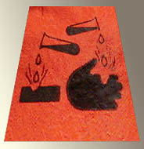

|
|
|
|
Les abrasifs et les outils de
polissage
|
Un très vaste domaine qui
concerne un grand nombre de disciplines. Pas
question, pour nous, d'en aborder toutes les
facettes, c'est impossible.
Nous mentionnerons donc
différents produits connus et nous
rentrerons dans le détail progressivement,
au fil des enquêtes, ce qui risque de
prendre quelque temps lorsque l'on songe par
exemple que l'abrasif définit aussi une
vaste catégorie de substances - notamment
des peintures - qui lui résistent, catégorie
bien concrète qu'il faudra évoquer.
N'hésitez pas, chers lecteurs, à nous
suggérer des ajouts ou des modifications.
|
Les machines et outils
Les meules
Poudres et pierres
Les potées
Les
acides
|
-
Machines et outils
Il en
existe une infinité !
*
Parmi les outils, on citera le polissoir
et le brunissoir,
destinés aux métaux fins et notamment au traitement de
la feuille d'or.
Certains outils de polissage nécessitent eux-mêmes un
entretien de type... polissage.
*
Mentionnons également les laines d'acier et d'autres
métaux. Elles sont utilisées notamment pour le travail
du bois.
*
Parmi les outils et machines destinés aux travaux
d'abrasion, beaucoup sont pourvus d'une surface où une
poudre abrasive a été collée.
*
D'autres sont des "tours"
motorisés où l'on fixe des cylindres (meules) plus ou
moins abrasifs ou polissants sur une tige rotative,
voir ci-dessous.
- Meules
(cylindres
à adapter aux "tours")
Ces objets
sont de toutes natures. Nombreux sont ceux qui sont
couverts de poudres collées (voir paragraphe
suivant), mais nous citerons deux exceptions :
*
la "patate". C'est une bande de
tissu (généralement du coton) qui a été imbibée de colle de peau. Enroulée
sur elle-même, elle forme un cylindre où l'on perce,
après séchage, un trou central afin de l'adapter à un
tour. Cet accessoire permet de polir différents
matériaux, y compris des métaux assez durs comme le
bronze par exemple.
* la meule de pierre meulière, les
meules faites d'autres roches. Dures, taillées en
cylindres percés, elles permettent de polir et
d'affûter.
- Poudres
et pierres utilisées pour l'abrasion et le
polissage
Au sein de
chaque type de substances, les usages varient
essentiellement en fonction de la finesse des
grains. Les poudres sont très souvent collées sur un
support plan (papier, toile, papier toilé,
plastique) ou cylindrique (adaptables à des tours).
La colle est parfois une simple colle
de poisson.
Dans
d'autres cas (notamment le polissage de la pierre),
les abrasifs pulvérulents sont souvent mélangés à
une graisse (suif, huiles)
ou à de l'eau dont on imbibe des tissus fins, des
tampons, des feutres ou des velours ("bouchons")
servant à l'application.
Mesure
La
taille des grains est mesurée de différentes
manières. Le papier de verre
et la toile émeri sont
référencés sur l'échelle
émeri notamment. Il existe une
classification standard qui concerne différentes
poudres. Elle indique le nombre de mailles au
pouce-carré du tamis témoin - elle n'est donc pas
conforme au système métrique. Concernant l'émeri
par exemple, elle va du 12 (très gros) au 600
(très fin). Le 80 correspond au 0 sur l'échelle
émeri. Les unités du Système International
(micron, millimètre, etc.) sont employées
également, le choix de telle ou telle mesure
dépendant entre autres du corps de métier
concerné.
Voici
donc une liste de poudres et de roches où l'on voit
nettement dominer les matériaux à base de silicium
et d'oxyde de fer. Les autres ont été placées en fin
de liste.
*
Le tripoli, très ancien,
toujours très fin, surtout destiné au polissage. Il
est mis en solution avec de l'eau et/ou d'autres
produits. Il est rouge, chargé non seulement de
silice mais aussi d'oxyde de fer.
*
Le rouge d'Angleterre (dit aussi de France, ou
autres appellations) est un produit de polissage
relativement comparable. Lire
passage in Les terres rouges,
*
Le rouge à polir est une version plus contemporaine.
C'est un oxyde de fer.
*
Les terres d'infusoires
sont plutôt employées pour l'astiquage.
* La pierre ponce,
roche extrêmement poreuse et légère de nature silicatée, employée depuis
l'aube des temps. Elle aurait d'autres vertus. Il
serait possible de l'adoucir à l'aide de produis
cireux.
La poudre de pierre est une poudre abrasive
également utilisée. On la nomme ponce soie.
Notes :
* il existe des
pierres ponces reconstituées, agglomérats de sable
collé.
Cliquer ici pour tout apport
concernant ce thème de recherche.
* la pierre ponce est
employée dans certaines recettes de préparation
des huiles à peindre.
* D'une nature
chimiquement proche, on mentionne également le grenat
ou garnet, poudre dure utilisée par
différents corps de métiers. Nous manquons également
d'informations sur ce produit.
*
Certaines matières
particulièrement siliceuses :
le verre, le
sable, certains grès
bien chargés de quartz et le quartz
lui-même (qui donne le papier
de verre traditionnel - grain voir ci-dessus). On ne les met pas
en solution à proprement parler, mais on leur
adjoint fréquemment de l'eau ou des graisses,
quelquefois simplement pour limiter le dégagement de
poussières.
*
Différentes craies
siliceuses (blanc d'Espagne, de Meudon) sont
employées pour les travaux très doux.
*
Comme son nom l'indique, la pierre
meulière - un autre calcaire siliceux - est
utilisée comme meule. Elle
est dure.
*
Le talc, autre matière
siliceuse, est mentionné comme outil abrasant,
*
Le Carborundum ®,
dit "le carbure" (carbure de silicium) est
particulièrement dur,
*
Le diamant (carbone véritable) détient le record
absolu de dureté,
*
Le corindon
et l'émeri, poudres alumineuses,
sont encore d'usage courant. La dureté du corindon
se situe juste au-dessous de celle du
Carborundum ®.
La pierre
peut également être utilisée pour polir une surface de
manière très douce. Mentionnons notamment le polissage
au galet dans la technique du tadelakt.
- Les "potées"
Ces
produits souvent toxiques agissent non seulement par
leur dureté, mais aussi - voire surtout - par leur
causticité. Ils sont souvent mêlés à un corps gras
qui facilite leur application.
- La
potée d'étain,
- Les
produits à base d'acide
oxalique ou d'autres acides (voir ci-dessous).
- Les
acides

Leur usage
est plus courant que l'on ne croit, leurs domaines
d'application étant nombreux. Leur fonction est
l'abrasion par corrosion. Une action mécanique peut
être nécessaire après traitement, et d'ailleurs ce
traitement peut être destiné à préparer l'action
mécanique.
La
dangerosité des acides est directement liée à leur concentration dans le
produit utilisé. Exemple : le citron est
anodin, mais l'acide citrique pur est extrêmement caustique.
Tester le pH des produits à l'aide de
papier tournesol est indispensable bien que
pas toujours suffisant.
En effet,
les acides ne sont jamais anodins, non seulement
parce qu'il sont corrosifs, mais aussi parce que
leurs incompatibilités à d'autres produits sont
nombreuses dans bien des cas, sans parler d'autres
propriétés spécifiquement dangereuses.
Évoquons
quelques emplois d'acides communs :
*
L'acide sulfurique
et l'acide nitrique,
bien qu'ils ne soient pas des acides forts (au sens
strictement chimique du terme - lire passage
in Les dialogues de Dotapea, chap. III),
sont extrêmement violents. Ils sont principalement
utilisés pour leur effet radical sur les métaux.
* L'acide
chlorhydrique dilué (un produit de
supermarché) et quelques autres (on évoquait l'acide
oxalique ci-dessus) ainsi que différents
produits dissolvants sont d'un usage relativement
courant, permettant d'obtenir des corrosions
superficielles pouvant soit être assimilées à des
abrasions, soit constituer la préparation d'une
abrasion ou d'un polissage.
Ils sont oxydants et permettent aussi d'obtenir des
effets chromatiques (patines
des statues métalliques).
Attention : ce n'est pas parce qu'il est facile
de se les procurer qu'ils sont anodins ; leur
emploi n'est aucunement dénué de danger.
Lire les
références aux sites consacrés à la
toxicologie.
A lire également, l'article
général du glossaire consacré aux acides.
Retour
début de page
|
|
|